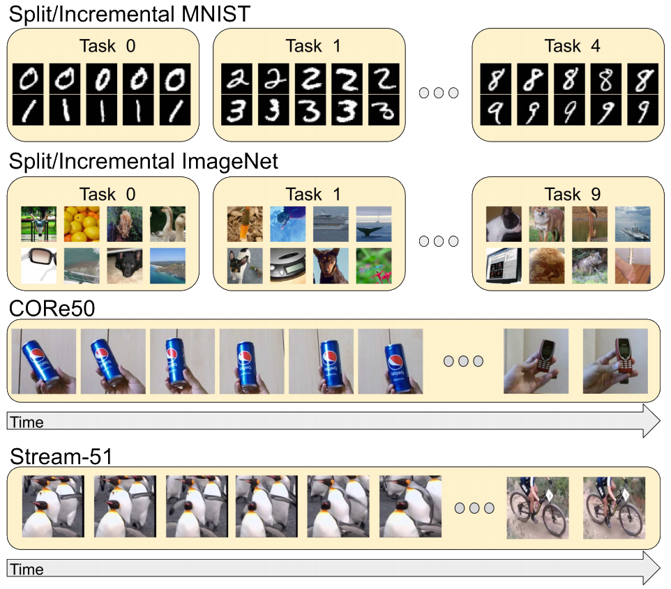
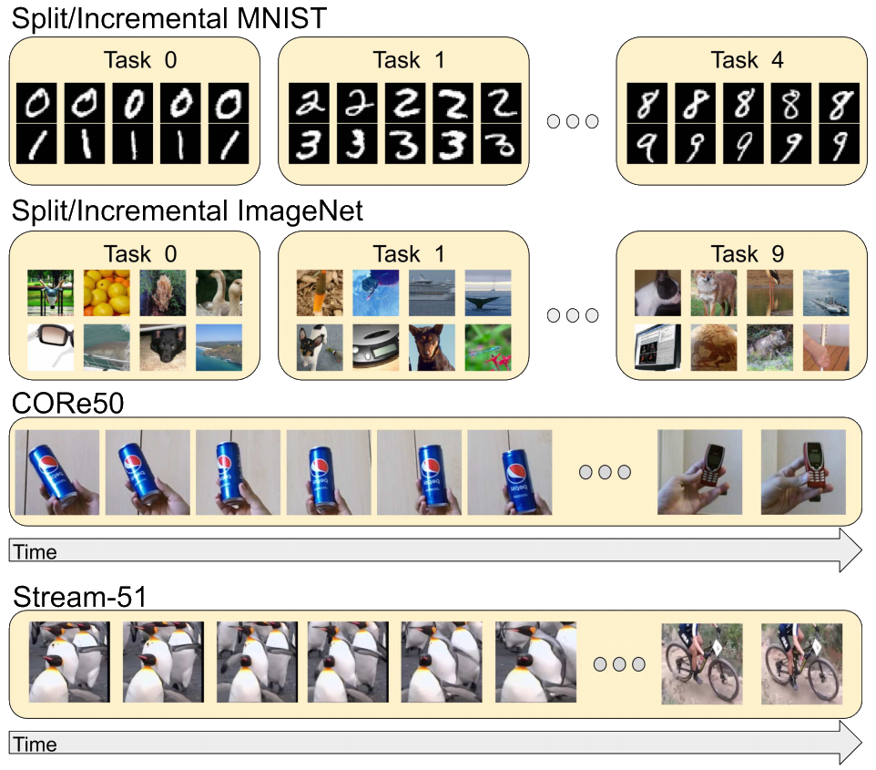

Online streaming learning is a more realistic paradigm where a model must learn one sample at a time from temporally correlated data streams. Although there are a few datasets designed specifically for this protocol, most have limitations such as few classes or poor image quality. In this work, we introduce Stream-51, a new dataset for streaming classification consisting of temporally correlated images from 51 distinct object categories and additional evaluation classes outside of the training distribution to test novelty recognition. We establish unique evaluation protocols, experimental metrics, and baselines for our dataset in the streaming paradigm.

Several of the most popular incremental learning paradigms involve learning from static image datasets like MNIST or ImageNet. More recently, datasets like CORe50 have become popular for learning from temporally sequenced images. Here, we present the Stream-51 dataset for learning from temporally correlated data streams of videos collected in natural/wild environments.


Stream-51 Statistics
Stream-51 is significantly larger than existing streaming classification datasets with 51 classes drawn from familiar animal and vehicle object classes. The Stream-51 test set contains static image samples from classes not included in the training distribution to test a model’s novelty detection capabilities.- 51 classes
- 150,736 unique training images
- 1,136 unqiue training videos
- between 11 and 37 unique videos per class
- images collected in natural/wild environments
- 5,100 total static test images (50 samples per training class and 2,550 novel samples)